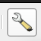
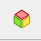
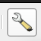
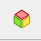

Les paramètres d'affichages sont disponible via le bouton en forme de clé à fourche
Voici les paramètre essentiel :
Onglet général : paramètrer l'emprise de la vue 3D. Plusieurs options classiques : l'emprise du caneva cartographique ou l'emprise d'une couche.
Onglet terrain : pour définir le MNT utilisé pour la modélisation 3D. Si vous travaillez avec des nuage de point, il n'y a pas besoin d'indiquer un MNT. il faut indiquer « terrain plat ». C'est ici que vous pouvez indiquer un facteur d'exagération verticale particulier (échelle verticale) et la granularité de la modélisation 3D (résolution de la tuile). Plus vous augmenterez cette valeur, plus le relief sera représenté avec finesse, mais plus votre ordinateur galèrera à charger l'image. Si vous mettez une valeur trop élevé, vous pouvez faire planter QGIS... Testez les valeurs progressivement. Mon ordinateur supporte assez bien jusqu'à 200px de résolution de la tuile au delà, il crash !
Traditionnellement, on exporte la vue 3D en image pour la retravailler sur son logiciel de DAO préféré Cela correspond à une capture d'écran.
Mais on peut aussi être disruptif et l'exporter sous la forme de scène 3D ou d'objet 3D pour la retravailler sous un logiciel de modélisation 3D  cela produit un dossier de scène comprenant 3 fichiers : .OBJ (géométrie de l'objet 3D), .MTL (matérieux de l'objet 3D) et .JPG (texture de l'objet 3D).
OBJ (. obj) est un format ouvert et universellement reconnu, initialement développé par la société Wavefront Technologies. Structuré en ASCII, il contient la description des données géométriques d'un modèle 3D (sommets, coordonnées de texture, couleur).
le format MTL (Material Template Library) est un fichier au format ASCII (texte) qui contient la définition d'un ou de plusieurs matériaux d'un objet 3D.
L'extension JPG (abréviation de Joint Photographic Experts Group) est le format de compression d'image Raster ou pixel. Il contient l'image drappé sur un objet 3D.
Ce triptyque peut être ouvert avec n'importe quel logiciel de madélisation 3D : Revit, Blender, 3DsMax, Sketchup, etc.

QGIS propose de visualiser le projet sous la forme d'une scène ou d'un objet en 3D.
Pour accèder à ce mode de visualisation : Menu Vue > Vue 3D > Nouvelle vue cartographique 3D.
à l'instar des mise en pages, vous pouvez paramétrer plusieurs « vue cartographique en 3D »
La fenêtre qui s'ouvre permet de visualiser et de naviguer dans la scène en 3D.
Les paramètres d'affichages sont disponible via le bouton en forme de clé à fourche
Voici les paramètre essentiel :
Onglet général : paramètrer l'emprise de la vue 3D. Plusieurs options classiques : l'emprise du caneva cartographique ou l'emprise d'une couche.
Onglet terrain : pour définir le MNT utilisé pour la modélisation 3D. Si vous travaillez avec des nuage de point, il n'y a pas besoin d'indiquer un MNT. il faut indiquer « terrain plat ». C'est ici que vous pouvez indiquer un facteur d'exagération verticale particulier (échelle verticale) et la granularité de la modélisation 3D (résolution de la tuile). Plus vous augmenterez cette valeur, plus le relief sera représenté avec finesse, mais plus votre ordinateur galèrera à charger l'image. Si vous mettez une valeur trop élevé, vous pouvez faire planter QGIS... Testez les valeurs progressivement. Mon ordinateur supporte assez bien jusqu'à 200px de résolution de la tuile au delà, il crash !
Pour naviguer sur la vue 3D, vous devez utiliser votre souris en maintenant la touche
Ctrlenfoncée, jusqu'à ce que vous trouviez le bon angle.Vous pouvez également utiliser la molette pour zoomer et dé-zoomer.
Cela demande un peu de pratique avant d'y arriver efficacement.
Traditionnellement, on exporte la vue 3D en image pour la retravailler sur son logiciel de DAO préféré Cela correspond à une capture d'écran.
Cela correspond à une capture d'écran.
Mais on peut aussi être disruptif et l'exporter sous la forme de scène 3D ou d'objet 3D pour la retravailler sous un logiciel de modélisation 3D  cela produit un dossier de scène comprenant 3 fichiers : .OBJ (géométrie de l'objet 3D), .MTL (matérieux de l'objet 3D) et .JPG (texture de l'objet 3D).
La scène 3D contient 3 fichiers :
Ce triptyque peut être ouvert avec n'importe quel logiciel de madélisation 3D : Revit, Blender, 3DsMax, Sketchup, etc.